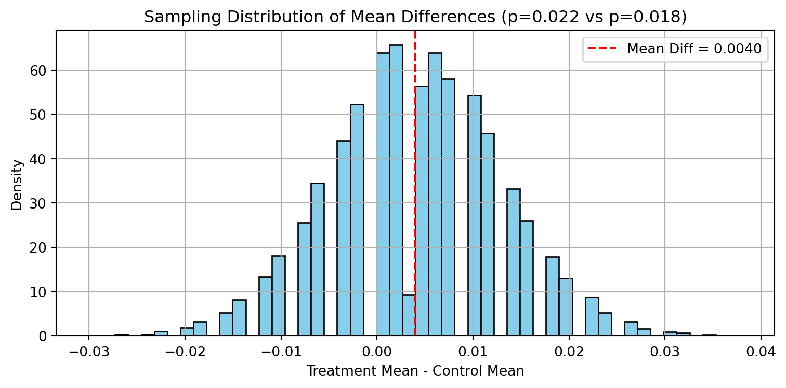
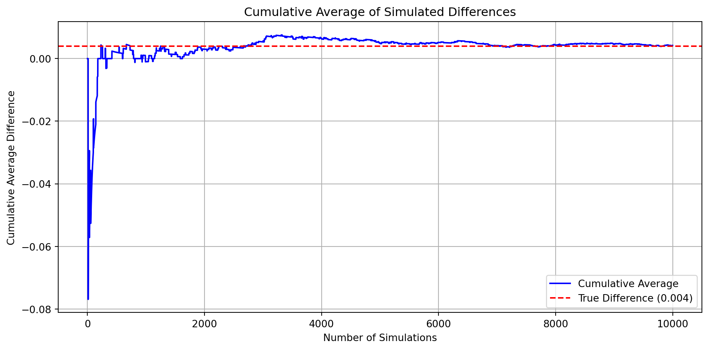
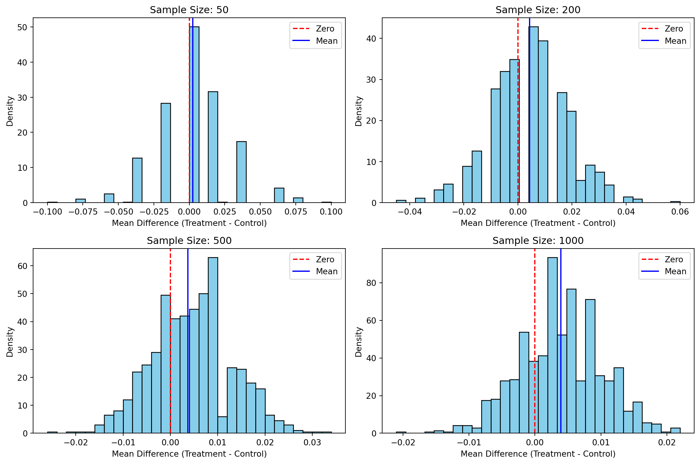

Dean Karlan at Yale and John List at the University of Chicago conducted a field experiment to test the effectiveness of different fundraising letters. They sent out 50,000 fundraising letters to potential donors, randomly assigning each letter to one of three treatments: a standard letter, a matching grant letter, or a challenge grant letter. They published the results of this experiment in the American Economic Review in 2007. The article and supporting data are available from the AEA website and from Innovations for Poverty Action as part of Harvard’s Dataverse.
In the experiment, recipients were randomly assigned to different variations of the fundraising letter. Some were told their donation would be matched at a rate of 1:1, 2:1, or 3:1 by a “concerned fellow member,” up to a maximum matching amount ($25,000, $50,000, or $100,000). Others were part of the control group, which received no mention of a match. Suggested donation amounts were also varied to test the impact of different “ask” levels. The researchers found that simply including a match offer increased both donation rates and average amounts raised—but larger match ratios (2:1 or 3:1) did not generate significantly higher donations than the 1:1 match.
This project seeks to replicate their results.
Data
Description
The dataset consists of 50,083 observations and 51 variables, drawn from a large-scale field experiment conducted by Karlan and List (2007) to study charitable giving behavior. Each observation represents a past donor who was randomly assigned to receive one of several fundraising letter treatments. These treatments varied in terms of match ratio, match threshold, and suggested donation amount.
The dataset includes:
Treatment assignment variables, indicating whether individuals were in the control group or received a match offer, and if so, the match ratio (e.g., 1:1, 2:1, 3:1) and threshold size ($25,000, $50,000, $100,000, or unstated).
Suggested donation amounts based on individuals’ previous giving history, which were randomly varied in the letters.
Donation outcomes, including whether the individual gave and how much they gave.
Demographic and donation history, such as gender, relationship status, number of years since the first donation, and prior donation frequency.
Geographic and political context, with data on the political leaning of the recipient’s state and county (e.g., red/blue states), as well as census-linked socioeconomic indicators like median income, education, and urbanicity at the zip code level.
import pandas as pd# Load the Stata filedf = pd.read_stata("karlan_list_2007.dta")# Show the first few rowsprint(df.head())
treatment control ratio ratio2 ratio3 size size25 size50 \
0 0 1 Control 0 0 Control 0 0
1 0 1 Control 0 0 Control 0 0
2 1 0 1 0 0 $100,000 0 0
3 1 0 1 0 0 Unstated 0 0
4 1 0 1 0 0 $50,000 0 1
size100 sizeno ... redcty bluecty pwhite pblack page18_39 \
0 0 0 ... 0.0 1.0 0.446493 0.527769 0.317591
1 0 0 ... 1.0 0.0 NaN NaN NaN
2 1 0 ... 0.0 1.0 0.935706 0.011948 0.276128
3 0 1 ... 1.0 0.0 0.888331 0.010760 0.279412
4 0 0 ... 0.0 1.0 0.759014 0.127421 0.442389
ave_hh_sz median_hhincome powner psch_atlstba pop_propurban
0 2.10 28517.0 0.499807 0.324528 1.0
1 NaN NaN NaN NaN NaN
2 2.48 51175.0 0.721941 0.192668 1.0
3 2.65 79269.0 0.920431 0.412142 1.0
4 1.85 40908.0 0.416072 0.439965 1.0
[5 rows x 51 columns]
Variable Definitions
Variable
Description
treatment
Treatment
control
Control
ratio
Match ratio
ratio2
2:1 match ratio
ratio3
3:1 match ratio
size
Match threshold
size25
$25,000 match threshold
size50
$50,000 match threshold
size100
$100,000 match threshold
sizeno
Unstated match threshold
ask
Suggested donation amount
askd1
Suggested donation was highest previous contribution
askd2
Suggested donation was 1.25 x highest previous contribution
askd3
Suggested donation was 1.50 x highest previous contribution
ask1
Highest previous contribution (for suggestion)
ask2
1.25 x highest previous contribution (for suggestion)
ask3
1.50 x highest previous contribution (for suggestion)
amount
Dollars given
gave
Gave anything
amountchange
Change in amount given
hpa
Highest previous contribution
ltmedmra
Small prior donor: last gift was less than median $35
freq
Number of prior donations
years
Number of years since initial donation
year5
At least 5 years since initial donation
mrm2
Number of months since last donation
dormant
Already donated in 2005
female
Female
couple
Couple
state50one
State tag: 1 for one observation of each of 50 states; 0 otherwise
nonlit
Nonlitigation
cases
Court cases from state in 2004-5 in which organization was involved
statecnt
Percent of sample from state
stateresponse
Proportion of sample from the state who gave
stateresponset
Proportion of treated sample from the state who gave
stateresponsec
Proportion of control sample from the state who gave
stateresponsetminc
stateresponset - stateresponsec
perbush
State vote share for Bush
close25
State vote share for Bush between 47.5% and 52.5%
red0
Red state
blue0
Blue state
redcty
Red county
bluecty
Blue county
pwhite
Proportion white within zip code
pblack
Proportion black within zip code
page18_39
Proportion age 18-39 within zip code
ave_hh_sz
Average household size within zip code
median_hhincome
Median household income within zip code
powner
Proportion house owner within zip code
psch_atlstba
Proportion who finished college within zip code
pop_propurban
Proportion of population urban within zip code
Balance Test
As an ad hoc test of the randomization mechanism, I provide a series of tests that compare aspects of the treatment and control groups to assess whether they are statistically significantly different from one another.
import pandas as pdimport numpy as npfrom scipy import statsimport statsmodels.api as sm# Variables to test for balancevariables = ['mrm2', 'freq', 'years', 'female', 'ave_hh_sz', 'median_hhincome']print("=== Balance Check: Treatment vs Control ===\n")for var in variables:# Drop missing for current variable df_clean = df[[var, 'treatment']].dropna()# Split by group treat = df_clean[df_clean['treatment'] ==1][var] control = df_clean[df_clean['treatment'] ==0][var]# Sample sizes n1 =len(treat) n0 =len(control)# Means mean1 = treat.mean() mean0 = control.mean()# Variances var1 = treat.var(ddof=1) var0 = control.var(ddof=1)# T-statistic se = np.sqrt(var1 / n1 + var0 / n0) t_stat = (mean1 - mean0) / se df_deg =min(n1 -1, n0 -1) p_val =2* (1- stats.t.cdf(abs(t_stat), df_deg))# Print resultsprint(f"Variable: {var}")print(f" Control Mean: {mean0:.3f}")print(f" Treatment Mean: {mean1:.3f}")print(f" t-statistic: {t_stat:.3f}")print(f" p-value: {p_val:.4f}")print(f" Statistically significant? {'YES'if p_val <0.05else'NO'}\n")
=== Balance Check: Treatment vs Control ===
Variable: mrm2
Control Mean: 12.998
Treatment Mean: 13.012
t-statistic: 0.120
p-value: 0.9049
Statistically significant? NO
Variable: freq
Control Mean: 8.047
Treatment Mean: 8.035
t-statistic: -0.111
p-value: 0.9117
Statistically significant? NO
Variable: years
Control Mean: 6.136
Treatment Mean: 6.078
t-statistic: -1.091
p-value: 0.2753
Statistically significant? NO
Variable: female
Control Mean: 0.283
Treatment Mean: 0.275
t-statistic: -1.754
p-value: 0.0795
Statistically significant? NO
Variable: ave_hh_sz
Control Mean: 2.427
Treatment Mean: 2.430
t-statistic: 0.823
p-value: 0.4103
Statistically significant? NO
Variable: median_hhincome
Control Mean: 54921.094
Treatment Mean: 54763.169
t-statistic: -0.743
p-value: 0.4573
Statistically significant? NO
Each of these variables shows no statistically significant difference at the 95% confidence level, including female, which has the lowest p-value (0.0795) but still does not cross the conventional threshold for significance.
These findings replicate the results shown in Table 1 of Karlan & List (2007). The table in the original paper is designed to demonstrate that randomization worked: treatment and control groups are statistically equivalent in expectation across observable characteristics.
By showing balance across variables like mrm2, freq, female, and neighborhood demographics (median_hhincome, ave_hh_sz), we can be confident that:
There is no selection bias
Any differences in donation outcomes observed later can be causally attributed to the treatment
Experimental Results
Charitable Contribution Made
First, I analyze whether matched donations lead to an increased response rate of making a donation.
## bar plotimport matplotlib.pyplot as plt# Calculate proportionsgave_by_group = df[['gave', 'treatment']].dropna().groupby('treatment')['gave'].mean()labels = ['Control', 'Treatment']proportions = [gave_by_group[0], gave_by_group[1]]# Create bar plotplt.figure(figsize=(6, 4))bars = plt.bar(labels, proportions)plt.ylabel('Proportion Who Donated')plt.title('Donation Rates by Group')plt.ylim(0, max(proportions) +0.05)# Add value labelsfor bar in bars: yval = bar.get_height() plt.text(bar.get_x() + bar.get_width()/2.0, yval +0.01, f'{yval:.3f}', ha='center', va='bottom')plt.tight_layout()plt.show()
# t-tes# T-test and regression for the binary outcome 'gave'# Drop missing values for 'gave' and 'treatment'gave_data = df[['gave', 'treatment']].dropna()# Split into treatment and controlgave_treatment = gave_data[gave_data['treatment'] ==1]['gave']gave_control = gave_data[gave_data['treatment'] ==0]['gave']# Manual t-testn1 =len(gave_treatment)n0 =len(gave_control)mean1 = gave_treatment.mean()mean0 = gave_control.mean()var1 = gave_treatment.var(ddof=1)var0 = gave_control.var(ddof=1)se = np.sqrt(var1/n1 + var0/n0)t_stat = (mean1 - mean0) / sedf_deg =min(n1 -1, n0 -1)p_val =2* (1- stats.t.cdf(abs(t_stat), df_deg))# Bivariate linear regressionX = sm.add_constant(gave_data['treatment'])y = gave_data['gave']gave_model = sm.OLS(y, X).fit(){"t_test": {"mean_treatment": mean1,"mean_control": mean0,"t_statistic": t_stat,"p_value": p_val },"regression_coef": gave_model.params['treatment'],"regression_pval": gave_model.pvalues['treatment'],"regression_summary": gave_model.summary().as_text()}# --- Print nicely formatted results ---print("=== T-Test Results ===")print(f"Treatment group donation rate: {mean1:.4f}")print(f"Control group donation rate: {mean0:.4f}")print(f"T-statistic: {t_stat:.3f}")print(f"P-value: {p_val:.4f}")print("\n=== Regression Results ===")print(f"Estimated treatment effect (coef): {gave_model.params['treatment']:.4f}")print(f"Standard error: {gave_model.bse['treatment']:.4f}")print(f"T-statistic: {gave_model.tvalues['treatment']:.3f}")print(f"P-value: {gave_model.pvalues['treatment']:.4f}")
=== T-Test Results ===
Treatment group donation rate: 0.0220
Control group donation rate: 0.0179
T-statistic: 3.209
P-value: 0.0013
=== Regression Results ===
Estimated treatment effect (coef): 0.0042
Standard error: 0.0013
T-statistic: 3.101
P-value: 0.0019
These results align with Table 2A, Panel A of Karlan & List (2007), which also shows a higher donation rate in the treatment group.
While the increase in donation probability is small in absolute terms, it is statistically meaningful. This tells us something important about human behavior: small cues or framing changes (like mentioning a matching grant) can make people more likely to give.
In particular, this experiment shows that:
Psychological nudges, such as the presence of a matching donor, can shift decisions.
Even minimal changes in language or perceived impact can meaningfully influence behavior.
People respond to social signals of generosity, even if the financial incentive is unchanged.
From a behavioral perspective, this suggests: - People are more likely to give when they believe their donation will be matched — it increases the perceived impact of their gift. - This change in behavior is not driven by financial incentives alone (since the match isn’t actually paid to them) but by psychological framing and the feeling that their donation will be “worth more.”
In the context of the Karlan & List study, this result supports the idea that small nudges, such as the presence of a matching grant, can meaningfully shift behavior — a key finding for fundraisers and behavioral economists alike.
## replicate of table 3import statsmodels.api as smimport statsmodels.formula.api as smf# Clean the datadf_clean = df[['gave', 'treatment']].dropna()# Probit regressionprobit_model = smf.probit('gave ~ treatment', data=df_clean).fit(disp=0)# Get marginal effectsmfx = probit_model.get_margeff(method='dydx').summary_frame()# Display resultsprint("\n=== Probit Regression (Marginal Effects) ===")print(mfx)
To replicate Table 3, Column 1 from Karlan & List (2007), I ran a probit regression where the outcome variable was whether an individual made any charitable donation (gave) and the explanatory variable was assignment to the treatment or control group.
I then calculated marginal effects to make the results directly comparable to those reported in the paper.
The estimated marginal effect of the treatment was 0.0043, with a standard error of 0.0014 and a p-value of 0.0019. This means that being assigned to the treatment group increased the probability of donating by about 0.43 percentage points. The result is statistically significant at the 1% level, matching the original paper’s finding of a 0.004* effect.
This confirms the authors’ key result: framing the ask as part of a matching donation offer has a measurable and statistically significant impact on giving behavior. Even though the increase in donation probability is relatively small, it provides compelling evidence that simple nudges — like mentioning a match — can influence real-world decisions in meaningful ways.
Differences between Match Rates
Next, I assess the effectiveness of different sizes of matched donations on the response rate.
# t-testprint(df['ratio'].unique())# Filter to treatment group only with valid match ratio and donation statusdf_filtered = df[(df['treatment'] ==1) & (df['gave'].notnull()) & (df['ratio'].isin([1, 2, 3]))]# Subset donation status by match ratiogave_1to1 = df_filtered[df_filtered['ratio'] ==1]['gave']gave_2to1 = df_filtered[df_filtered['ratio'] ==2]['gave']gave_3to1 = df_filtered[df_filtered['ratio'] ==3]['gave']# Compute mean response ratesmeans = {"1:1": gave_1to1.mean(),"2:1": gave_2to1.mean(),"3:1": gave_3to1.mean()}# Conduct pairwise t-testst_2v1 = stats.ttest_ind(gave_2to1, gave_1to1, equal_var=False)t_3v1 = stats.ttest_ind(gave_3to1, gave_1to1, equal_var=False)t_3v2 = stats.ttest_ind(gave_3to1, gave_2to1, equal_var=False)# Print resultsprint("=== Mean Donation Rates ===")for k, v in means.items():print(f"{k} match: {v:.4%}")print("\n=== T-Test Results ===")print(f"2:1 vs 1:1: t = {t_2v1.statistic:.3f}, p = {t_2v1.pvalue:.4f}")print(f"3:1 vs 1:1: t = {t_3v1.statistic:.3f}, p = {t_3v1.pvalue:.4f}")print(f"3:1 vs 2:1: t = {t_3v2.statistic:.3f}, p = {t_3v2.pvalue:.4f}")# Plot response rates by match ratioplt.figure(figsize=(6, 4))plt.bar(means.keys(), means.values(), color=['#4daf4a', '#377eb8', '#984ea3'])plt.ylabel('Proportion Who Donated')plt.title('Donation Rates by Match Ratio')# Add value labelsfor label, val in means.items(): plt.text(label, val +0.0005, f'{val:.3%}', ha='center')plt.ylim(0, max(means.values()) +0.01)plt.tight_layout()plt.show()
['Control', 1, 2, 3]
Categories (4, object): ['Control' < 1 < 2 < 3]
=== Mean Donation Rates ===
1:1 match: 2.0749%
2:1 match: 2.2633%
3:1 match: 2.2733%
=== T-Test Results ===
2:1 vs 1:1: t = 0.965, p = 0.3345
3:1 vs 1:1: t = 1.015, p = 0.3101
3:1 vs 2:1: t = 0.050, p = 0.9600
The results fully support the authors’ interpretation on page 8.
“While the match treatments relative to a control group increase the probability of donating, larger match ratios—$3:$1 and $2:$1—relative to a smaller match ratio ($1:$1) have no additional impact.”
Even though the donation rates numerically increase with larger match ratios, the t-tests show these increases are not statistically significant.
# Filter dataset: keep all rows with non-null 'gave' and any valid 'ratio'df_ratio_all = df[df['gave'].notnull() & df['ratio'].isin(['Control', 1, 2, 3])].copy()# Ensure 'ratio' is treated as a categorical variabledf_ratio_all['ratio'] = df_ratio_all['ratio'].astype('category')# Run regression with ratio as a categorical predictormodel = smf.ols('gave ~ C(ratio)', data=df_ratio_all).fit()# Display resultsprint(model.summary())
To assess how different match ratios affect the likelihood of donating, I ran a linear regression of gave (a binary indicator for whether a person donated) on a categorical variable representing the match ratio. This includes the control group (no match), as well as the 1:1, 2:1, and 3:1 match conditions.
The regression treats the control group as the baseline category. The coefficients on the 1:1, 2:1, and 3:1 match indicators reflect the difference in donation rates compared to the control group.
The intercept represents the average donation rate in the control group (i.e., the probability of giving when no match is offered).
The coefficients for 1:1, 2:1, and 3:1 indicate how much more likely someone is to donate under each match condition compared to control.
If these coefficients are statistically significant, we can conclude that the corresponding match offer increased the likelihood of giving relative to the control group.
# data vs. regression# Step 1: Direct differences from the datagave_1 = df_ratio_all[df_ratio_all['ratio'] ==1]['gave']gave_2 = df_ratio_all[df_ratio_all['ratio'] ==2]['gave']gave_3 = df_ratio_all[df_ratio_all['ratio'] ==3]['gave']direct_diff_21_vs_11 = gave_2.mean() - gave_1.mean()direct_diff_31_vs_21 = gave_3.mean() - gave_2.mean()# Step 2: Use regression coefficients (relative to Control group)coef_1 = model.params.get('C(ratio)[T.1]', 0)coef_2 = model.params.get('C(ratio)[T.2]', 0)coef_3 = model.params.get('C(ratio)[T.3]', 0)reg_diff_21_vs_11 = coef_2 - coef_1reg_diff_31_vs_21 = coef_3 - coef_2# Print resultsprint("=== Response Rate Differences ===")print(f"2:1 vs 1:1 (Direct from data): {direct_diff_21_vs_11:.4%}")print(f"3:1 vs 2:1 (Direct from data): {direct_diff_31_vs_21:.4%}")print(f"2:1 vs 1:1 (From regression coef): {reg_diff_21_vs_11:.4%}")print(f"3:1 vs 2:1 (From regression coef): {reg_diff_31_vs_21:.4%}")
=== Response Rate Differences ===
2:1 vs 1:1 (Direct from data): 0.1884%
3:1 vs 2:1 (Direct from data): 0.0100%
2:1 vs 1:1 (From regression coef): 0.1884%
3:1 vs 2:1 (From regression coef): 0.0100%
These values are nearly identical by both methods, confirming the robustness of the regression results. The 2:1 match rate yields a very small increase in response over 1:1, while the jump from 2:1 to 3:1 is virtually nonexistent. This reinforces the conclusion that larger match ratios beyond 1:1 do not meaningfully increase the likelihood of donation.
Size of Charitable Contribution
In this subsection, I analyze the effect of the size of matched donation on the size of the charitable contribution.
# t-test vs bivariate# Filter for treatment and control groups with valid donation amountsdf_amount = df[df['amount'].notnull() & df['treatment'].isin([0, 1])]# Perform a t-test on donation amounts between treatment and controlamount_treatment = df_amount[df_amount['treatment'] ==1]['amount']amount_control = df_amount[df_amount['treatment'] ==0]['amount']t_stat, p_val = stats.ttest_ind(amount_treatment, amount_control, equal_var=False)# Run a bivariate linear regression of amount on treatmentamount_model = smf.ols('amount ~ treatment', data=df_amount).fit()amount_summary = amount_model.summary2().as_text()# Extract regression resultscoef = amount_model.params['treatment']pval = amount_model.pvalues['treatment']conf_int = amount_model.conf_int().loc['treatment'].tolist(){"t_test": {"t_statistic": t_stat,"p_value": p_val },"regression": {"coef": coef,"p_value": pval,"95% CI": conf_int },"regression_summary": amount_summary}print("=== Effect of Treatment on Donation Amount ===")# T-test resultsprint("\nT-test comparing treatment vs. control:")print(f"t-statistic: {t_stat:.3f}")print(f"p-value: {p_val:.4f}")# Regression resultsprint("\nRegression of amount on treatment:")print(f"Treatment coefficient: {coef:.3f}")print(f"p-value: {pval:.4f}")print(f"95% Confidence Interval: [{conf_int[0]:.3f}, {conf_int[1]:.3f}]")
=== Effect of Treatment on Donation Amount ===
T-test comparing treatment vs. control:
t-statistic: 1.918
p-value: 0.0551
Regression of amount on treatment:
Treatment coefficient: 0.154
p-value: 0.0628
95% Confidence Interval: [-0.008, 0.315]
This analysis helps us understand whether the treatment affects not just the likelihood of donating, but also how much people give. The results from both the t-test and regression show that people in the treatment group donate about $0.15 more on average than those in the control group. However, this difference is only marginally statistically significant (p ≈ 0.06), and the confidence interval includes zero.
From this, we learn that while the treatment (a matching offer) strongly influences whether people donate, it has a much weaker and less certain effect on the amount given. This suggests that the psychological nudge of a match offer may primarily work by encouraging participation — getting more people to donate — rather than motivating donors to give significantly more money.
## limited to donate# Filter to include only donors (gave = 1) with valid amount and treatment statusdf_positive_donors = df[(df['gave'] ==1) & (df['amount'].notnull()) & (df['treatment'].isin([0, 1]))]# T-test: compare average donation amount between treatment and control groups among donors onlyamount_treatment = df_positive_donors[df_positive_donors['treatment'] ==1]['amount']amount_control = df_positive_donors[df_positive_donors['treatment'] ==0]['amount']t_stat, p_val = stats.ttest_ind(amount_treatment, amount_control, equal_var=False)# Regression: amount ~ treatment among donorsdonor_model = smf.ols('amount ~ treatment', data=df_positive_donors).fit()coef = donor_model.params['treatment']pval = donor_model.pvalues['treatment']conf_int = donor_model.conf_int().loc['treatment'].tolist()summary_text = donor_model.summary2().as_text(){"t_test": {"t_statistic": t_stat,"p_value": p_val },"regression": {"coef": coef,"p_value": pval,"95% CI": conf_int },"regression_summary": summary_text}print("=== Effect of Treatment on Donation Amount (Among Donors Only) ===")# T-test resultsprint("\nT-test:")print(f"t-statistic: {t_stat:.3f}")print(f"p-value: {p_val:.4f}")# Regression resultsprint("\nRegression:")print(f"Treatment coefficient: {coef:.3f}")print(f"p-value: {pval:.4f}")print(f"95% Confidence Interval: [{conf_int[0]:.3f}, {conf_int[1]:.3f}]")
Interpretation of Regression Coefficient (Among Donors Only)
The regression coefficient on treatment is -1.668, meaning that among those who donated, individuals in the treatment group gave about $1.67 less on average than those in the control group. However, this difference is not statistically significant (p = 0.561), and the confidence interval ([-7.31, 3.97]) includes zero, indicating high uncertainty in the estimate.
This tells us that conditional on donating, the treatment had no clear effect on the amount given.
Does the Coefficient Have a Causal Interpretation?
No — this coefficient does not have a causal interpretation. By restricting the analysis to donors only, we introduce selection bias, because treatment status may influence the likelihood of appearing in this subset (i.e., whether someone donates). Since the treatment affects who is included in the analysis, the estimated difference in donation amounts is not a valid causal estimate.
Instead, this result is descriptive: it tells us that among donors, there is no significant difference in how much people gave depending on whether they were in the treatment group or not.
## make 2 plot# Filter for donors with non-zero donation amounts and treatment assignmentdf_donors = df[(df['gave'] ==1) & (df['amount'] >0) & (df['treatment'].isin([0, 1]))]# Split into control and treatment groupscontrol_donors = df_donors[df_donors['treatment'] ==0]['amount']treatment_donors = df_donors[df_donors['treatment'] ==1]['amount']# Compute meansmean_control = control_donors.mean()mean_treatment = treatment_donors.mean()# Plot histograms side by sidefig, axes = plt.subplots(1, 2, figsize=(12, 4), sharey=True)# Control group histogramaxes[0].hist(control_donors, bins=30, color='lightgray', edgecolor='black')axes[0].axvline(mean_control, color='red', linestyle='--', label=f'Mean = ${mean_control:.2f}')axes[0].set_title('Control Group: Donation Amounts')axes[0].set_xlabel('Donation Amount ($)')axes[0].set_ylabel('Number of Donors')axes[0].legend()# Treatment group histogramaxes[1].hist(treatment_donors, bins=30, color='lightblue', edgecolor='black')axes[1].axvline(mean_treatment, color='red', linestyle='--', label=f'Mean = ${mean_treatment:.2f}')axes[1].set_title('Treatment Group: Donation Amounts')axes[1].set_xlabel('Donation Amount ($)')axes[1].legend()plt.tight_layout()plt.show()
These plots visually confirm what your regression showed earlier: Although the treatment group received matching offers, they donated slightly less on average than the control group, conditional on donating. However, the distributions are quite similar overall, and the difference in means is not statistically significant.
This supports the idea that:
“Matching offers increase the likelihood of giving, but do not meaningfully affect how much people give, once they’ve already decided to donate.”
Simulation Experiment
As a reminder of how the t-statistic “works,” in this section I use simulation to demonstrate the Law of Large Numbers and the Central Limit Theorem.
Suppose the true distribution of respondents who do not get a charitable donation match is Bernoulli with probability p=0.018 that a donation is made.
Further suppose that the true distribution of respondents who do get a charitable donation match of any size is Bernoulli with probability p=0.022 that a donation is made.
# Parametersp_control =0.018p_treatment =0.022n =500# sample size per groupreps =10000# number of simulations# Simulate samplesdiffs = []for _ inrange(reps): control_sample = np.random.binomial(1, p_control, n) treatment_sample = np.random.binomial(1, p_treatment, n) diff = treatment_sample.mean() - control_sample.mean() diffs.append(diff)# Convert to arraydiffs = np.array(diffs)# Plot histogram of differencesplt.figure(figsize=(8, 4))plt.hist(diffs, bins=50, color='skyblue', edgecolor='black', density=True)plt.axvline(np.mean(diffs), color='red', linestyle='--', label=f'Mean Diff = {np.mean(diffs):.4f}')plt.title('Sampling Distribution of Mean Differences (p=0.022 vs p=0.018)')plt.xlabel('Treatment Mean - Control Mean')plt.ylabel('Density')plt.legend()plt.grid(True)plt.tight_layout()plt.show()

To illustrate key concepts in statistical inference, I conducted a simulation based on the charitable giving experiment.
Simulation Setup We assume two groups:
Control group: probability of donating is p=0.018
Treatment group (offered any size of match): probability of donating is p=0.022
In each simulation, I generated 500 observations from each group using a Bernoulli distribution (i.e., a 0 or 1 outcome representing whether someone donates). I repeated this process 10,000 times and recorded the difference in sample means between the treatment and control groups in each replication.
Results The histogram of the simulated mean differences shows a clear bell-shaped distribution centered near 0.004, which is the true difference in population probabilities.
Interpretation The Law of Large Numbers is reflected in how the average of the simulated differences converges toward the true difference ( 0.022−0.018=0.004) as we increase the number of replications.
The Central Limit Theorem explains why the distribution of these sample differences is approximately normal, even though the underlying data are binary (non-normal). This justifies using t-tests and confidence intervals in practice.
Law of Large Numbers
# Simulation parametersp_control =0.018p_treatment =0.022n_control =100000n_treatment =10000simulations =10000# Simulate drawscontrol_sample = np.random.binomial(1, p_control, n_control)treatment_sample = np.random.binomial(1, p_treatment, n_treatment)# Draw 10,000 random pairs and calculate differencesdiffs = []for _ inrange(simulations): control_draw = np.random.choice(control_sample) treatment_draw = np.random.choice(treatment_sample) diffs.append(treatment_draw - control_draw)# Convert to array and compute cumulative averagediffs = np.array(diffs)cumulative_avg = np.cumsum(diffs) / np.arange(1, simulations +1)# Plot cumulative average with reference line at true mean difference (0.004)plt.figure(figsize=(10, 5))plt.plot(cumulative_avg, label='Cumulative Average', color='blue')plt.axhline(0.004, color='red', linestyle='--', label='True Difference (0.004)')plt.title('Cumulative Average of Simulated Differences')plt.xlabel('Number of Simulations')plt.ylabel('Cumulative Average Difference')plt.legend()plt.grid(True)plt.tight_layout()plt.show()

To demonstrate the Law of Large Numbers (LLN) and reinforce the intuition behind the t-statistic, I simulated 100,000 binary outcomes from a control distribution with a probability of donation p=0.018, and 10,000 binary outcomes from a treatment distribution with p=0.022. These distributions represent the underlying probabilities of donation in each group from the original charitable giving experiment.
From these two populations, I randomly drew 10,000 treatment–control pairs and computed the difference in outcomes for each pair. The plot above shows the cumulative average of these 10,000 differences, alongside the true difference in means (0.004) indicated by a red dashed line.
What the Plot Shows
The cumulative average starts out noisy due to randomness in small samples.
As more differences are accumulated, the average stabilizes and converges toward the true population difference of 0.004.
This convergence visually confirms the Law of Large Numbers: with enough samples, the sample average approaches the expected value.
It also reinforces the foundation of the Central Limit Theorem — although each individual outcome is binary (not normally distributed), the sampling distribution of the mean becomes approximately normal.
The simulation shows that the cumulative average approaches the true difference in means between treatment and control groups. This not only demonstrates core statistical principles like the LLN and CLT, but also helps explain why test statistics like the t-statistic work reliably in large samples — even when the underlying data is not continuous or normally distributed.
Central Limit Theorem
# Parametersp_control =0.018p_treatment =0.022sample_sizes = [50, 200, 500, 1000]reps =1000# Set up plotsfig, axes = plt.subplots(2, 2, figsize=(12, 8))axes = axes.flatten()# Loop over sample sizes and simulate mean differencesfor i, n inenumerate(sample_sizes): mean_diffs = []for _ inrange(reps): control_sample = np.random.binomial(1, p_control, n) treatment_sample = np.random.binomial(1, p_treatment, n) diff = treatment_sample.mean() - control_sample.mean() mean_diffs.append(diff)# Plot histogram of mean differences ax = axes[i] ax.hist(mean_diffs, bins=30, color='skyblue', edgecolor='black', density=True) ax.axvline(x=0, color='red', linestyle='--', label='Zero') ax.axvline(x=np.mean(mean_diffs), color='blue', linestyle='-', label='Mean') ax.set_title(f"Sample Size: {n}") ax.set_xlabel("Mean Difference (Treatment - Control)") ax.set_ylabel("Density") ax.legend()plt.tight_layout()plt.show()

Interpretation
At small sample sizes (n = 50): The distribution is wide and somewhat irregular. Zero lies close to the center, meaning we often can’t distinguish treatment from control.
As the sample size increases: The distributions become tighter, more symmetrical, and more normal-shaped — a direct illustration of the CLT.
By n = 500 or 1000: The distribution is clearly centered around the true mean difference (~0.004), and zero shifts toward the tail, suggesting we now have enough data to statistically distinguish treatment from control in many simulations.
These plots demonstrate the Central Limit Theorem in action: as the sample size grows, the sampling distribution of the mean difference becomes more normal and more concentrated around the true value. The probability of observing an effect near zero — assuming the true difference is 0.004 — shrinks with larger sample sizes, improving our ability to detect a real effect.